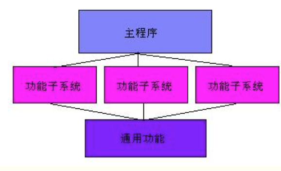

iOS开发之静态链接库
概述
在Xcode提供的构建设置中，有一项称为“MACH_O_TYPE ”，其作用是定义输出的产品文件格式以及产品文件用于其他产品构建时如何被链接。它的取值如下所示：
- 可执行文件（mh_execute）(.app)
- 动态链接库（mh_dylib）（.dylib）
- 包（mh_bundle）(.bundle)
- 静态链接库（staticlib）(.a)
- 可重定位的对象文件（mh_object）(.o)
作为iOS开发者，基本上只要关心可执行文件、Bundle和静态链接库就可以了。动态链接库没法用，而静态库（archieve）是.o的文件包，所以静态库完全可以替代.o文件。
出于某些目的，比如设计架构上将功能与展现相分离，或者重要功能与边缘功能相分离，或者只是为了模块功能划分的清晰性等等，软件在设计时可能会分成几个工程来做。而对于iOS程序来说，最终提供给移动端用户的产品只能是ipa，即一个可执行程序，而其他工程所能提供的只能为其服务。这时程序员所能选择的只有bundle或者静态库。本文将就静态库的一些使用经验、技巧做出叙述，对于bundle的使用，将在另外的文章里进行叙述。
最后稍微科普一下动态链接库和静态链接库：
静态链接是在编译时进行的，静态链接库（.a文件）实际上就是编译好的程序代码，如果有两个程序都用到了同一个库的话，且同时运行这两个程序，那么内存中会有两份相同的库的代码。动态链接是在运行时进行的，由操作系统管理，如果两程序都用同一个DLL的话，实际上内存中只有一份代码。由于iOS开发严格的权限管理，即基本只限于沙盒内，所以动态链接库这种东西是不准使用的。
基本流程
最简单的流程：
在新建工程中选择“Cocoa Touch Static Library ”，输入工程名称，一个静态库工程就完成了。新建几个想要使用的类，编译，生成最终的.a文件。将类的声明头文件与.a文件提供给主工程，将.a添加到主工程的target中的链接步骤中即可进行使用。
对于具体的使用步骤，网上有很多，这里就不进行赘述了。
细节
- 隐藏复杂性
库的存在最基本意义在于，提供与主工程分离的功能模块且不会暴露细节。只暴露出想让别人看到的内容是模块设计时需要详细考虑的。如果静态库的功能是提供一些API，那么很好的一种实践是使用外观模式，提供一个简单统一的对外类给主程序使用。对外类使用单例也是一种常用的模式。使用外观可以极大的降低子系统与主程序之间的耦合，隐藏子系统的复杂性。简单地说，就是提供给主程序的产品只有一个头文件和一个.a文件，头文件中只有一个类的声明，且这个类可以是一个单例。 - 前缀的使用
当开发静态库时，需要注意前缀的使用。需要在设计时对类名附加前缀，否则在主程序使用时可能会发生重名的风险。如果主程序和子系统是同一个项目组还好，如果是由第三方，且有多个子系统提供.a时，这种重名的几率还是很大的。
- 多个有依赖的静态库的使用
由于静态链接库是没有链接这一步骤的，提供.a的作用和直接提供.a当中所包含的.o的作用是完全一样的。因而在编写静态库工程时，可以只根据一个头文件就可以调用一些方法，只要在程序真正运行时提供需要的.a就可以了（主程序中链接的顺序可能要注意一下）。例如一个头文件提供一个A类，它包含a方法，但是只有声明而没有实现。在静态库工程中，可以实例化A类并且调用a方法，而不会发生任何错误。这种能力可以应用在一些的开发流程中。（当然也可以提供.a一起编译，最后提供一个大号的.a给主程序）
例如，软件设计为如下所示：

其中，功能子系统的提供形式是.a，通用功能的提供形式也是.a。功能子系统提供各自的功能给主程序使用，且它们都要使用一些由通用功能模块提供的方法。这时，通用功能的.a可以不提供给各个子系统，只要将.h功能子系统就可以了。最后将功能子系统的3个.a和通用功能的.a一起提供给主程序就可以了。这样做的好处是最终提供的库的总体积会比较小，而且通用功能在开发过程中不必实时的将产品提供给各个子系统，只要提供给主程序就可以了。只要提供的接口不变，通用功能模块就不必为各子系统提供更新。
当然这是一种比较极端的情况，毕竟大多数模块都要程序员自己进行测试，这时就必须提供通用功能的.a了。
4、使用类别（Category）的静态库
类别模式用于向现有的类中添加方法，可用于解决类簇子类化太过复杂的问题。Objective-C中直接支持此模式并广泛应用。在实际应用当中，类别经常作为组织类实现的工具。例如NSObject就分为了几十个类别。这种将一个巨大的类按不同功能分解到不同类别中的方式，或者对同一个类在不同模块进行扩展的方式，同样可以在静态库中使用。即，只要提供一个要扩展的类的头文件，就可以对其使用类别进行扩展。这种方式的应用没有什么难理解的，只要注意编写类别方法的时候需要添加前缀，否则可能造成功能的替换混乱。
静态库中使用类别有一个bug要注意。在OTHER_LDFLAGS中使用-ObjC使静态库可以使用objective-c中的特性，比如KVC或者类别。但是对于只包含类别而不包含类的静态库，链接时有一个bug会阻碍静态库内的.o的载入。使用-all_load或者-force_load来解决这个问题。也就是说，大多数情况下都要使用-ObjC这个标识，只有在静态库中只包含类别时才需要使用-all_load（但实际上有时即使有类的时候也有载入不全的情况）。
总结
以上就是我对iOS开发中静态库使用的一些经验与理解，希望大家共同进步。